¿Te imaginas aprender cómo funcionan "las tripas" de los chips? ¿Te imaginas hacer tus propios chips? Todo esto es posible gracias a las FPGAs. Con ellas podrás sumergirte de lleno en el diseño de electrónica digital avanzada.
La electrónica digital es la base sobre la que están diseñados todos los chips digitales actuales: procesadores, controladores, unidades de comunicación, etc. Los circuitos digitales sólo trabajan con bits, (0, 1), y se encargan de manipularlos, almacenarlos y transportarlos
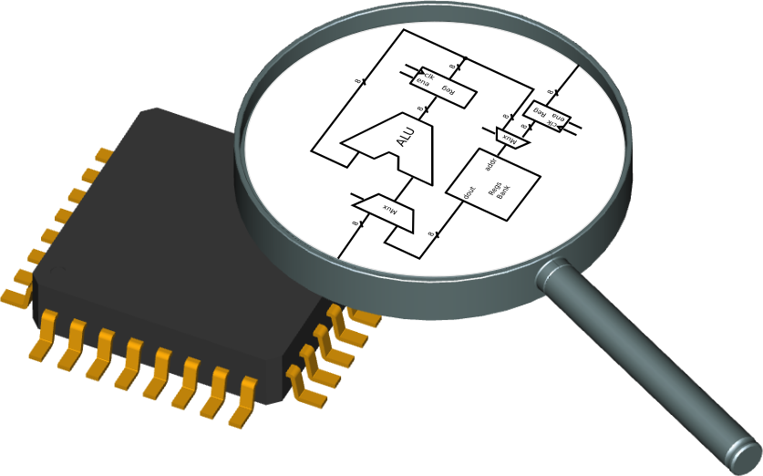
Los circuitos digitales están formados por tres elementos: puertas lógicas, para manipular bits, biestables, para almacenarlos y cables para unir los componentes y transportar los bits
Las FPGAs son chips que contienen en su interior todos estos elementos básicos sin conectar, organizados en una retícula
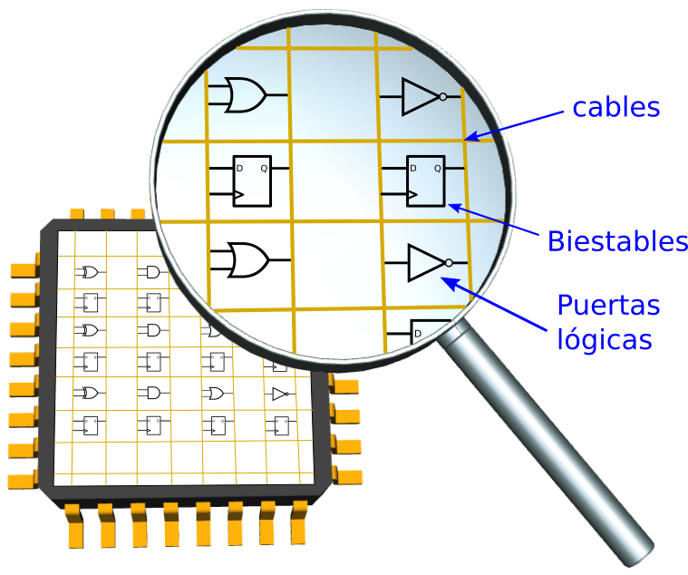
Las conexiones a los cables son programables, de manera que se pude configurar qué elementos se unen a cuales, formando así el circuito digital que queremos. También se pueden configurar las conexiones con los pines de la FPGA, determinando por qué pines entra la información y por cuáles sale
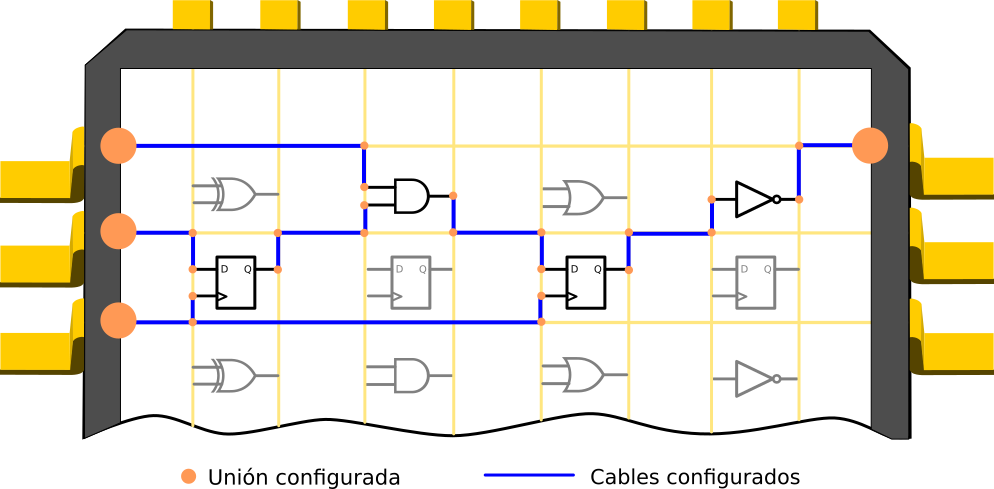
Si ahora establecemos otras conexiones diferentes, obtenemos un circuito diferente. ¡Simplemente reconfigurando las uniones de los cables!. Por eso, a este procese se le denomina reconfiguración de la FPGA. Circuitos reales, que aparecen y desaparecen a nuestro antojo...
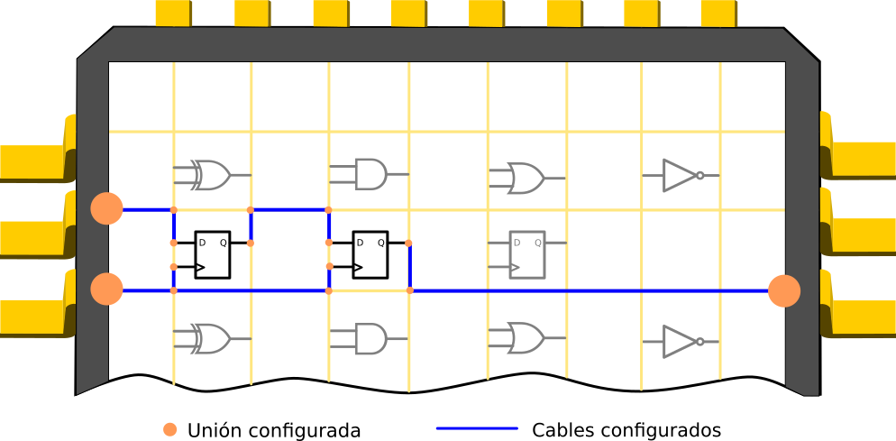
Esta es la potencia de las FPGAs: son reconfigurables. Y por tanto tienen muchísima versatilidad. Podemos crear circuitos con existencia física, a nuestro antojo.
Las FPGAs son las impresoras 3D de los circuitos digitales
Cada una de las conexiones tiene asociado un bit de configuración que determina su estado: Conectado (1) o NO Conectado (0)
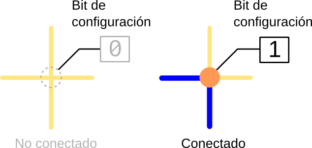
En este ejemplo, la conexión se aplica entre los cables izquierdo e inferior. Pero hay un bit de configuración por cada una de las posibles conexiones (No están puestos en el esquema por simplicidad)
La reconfiguración de las FPGAs se consigue asignando valores a sus bits de configuración. Iniciamente están todos a 0, por lo que no hay conexiones establecidas y la FPGA está "en blanco". Al dar valores a sus bits de configuración, se establecen las conexiones y aparece nuestro circuito
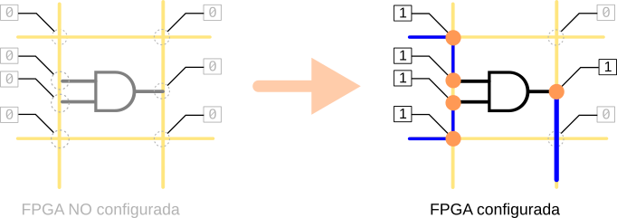Todos los valores para los bits de configuración se agrupan en una tira de bits llamada bitstream, que se carga desde el exterior
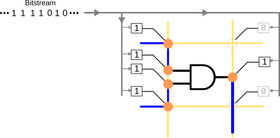El bitstream se transmite por un bus serie (spi), bit a bit, configurándose las conexiones de la FPGA
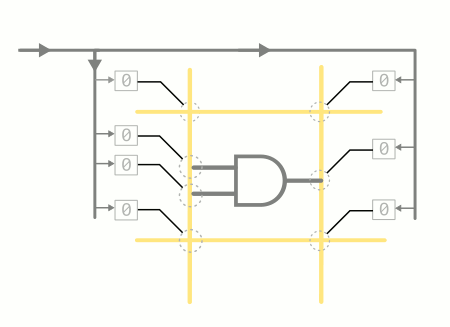Las FPGA son volátiles: al quitar la alimentacion pierden su configuración. Al alimentarlas de nuevo, están en blanco y se quedan esperando a recibir un bitstream para reconfigurarse
Por eso, junto a la FPGA se sitúa una memoria serie externa, no volátil, llamada memoria de configuración, que almacena el bitstream. Así, al alimentar la FPGA lo primero que hace es reconfigurarse con el bitstream de la memoria de configuración
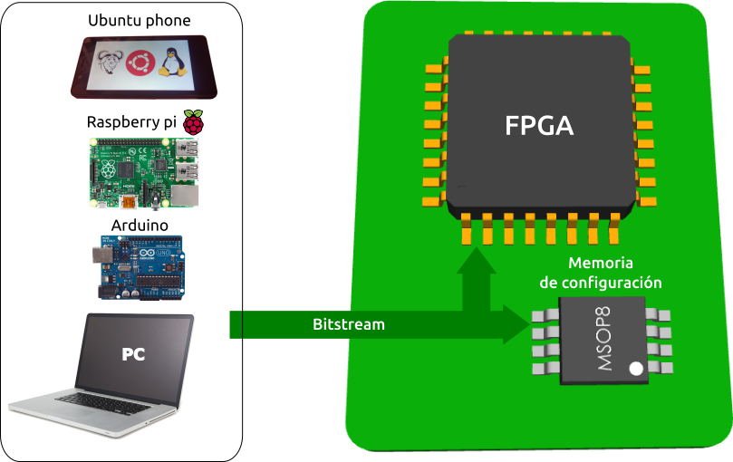El bitstream se graba en la memoria de configuración desde un dispositivo externo: ordenador, arduino, raspberry pi, ubuntu phone, etc.
¿Cuál es el proceso de diseño de un circuito digital? ¿Cómo generamos el bitstream?
Los circuitos digitales modernos se diseñan utilizando lenguajes de descripción hardware (HDL). Los más extendidos son VHDL y Verilog
Desde una descripción en HDL podemos simular el circuito, generar el bitstream para FPGAs o fabricar el circuito integrado
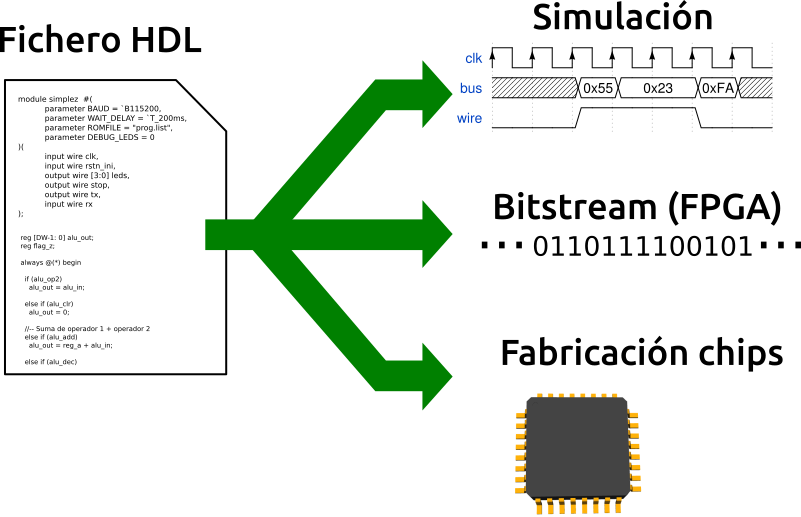En las FPGAs, obtenemos circuitos reales a partir de ficheros de texto escritos en un lenguaje HDL. Los circuitos "se materializan" a partir del código HDL. A este proceso lo denominamos síntesis
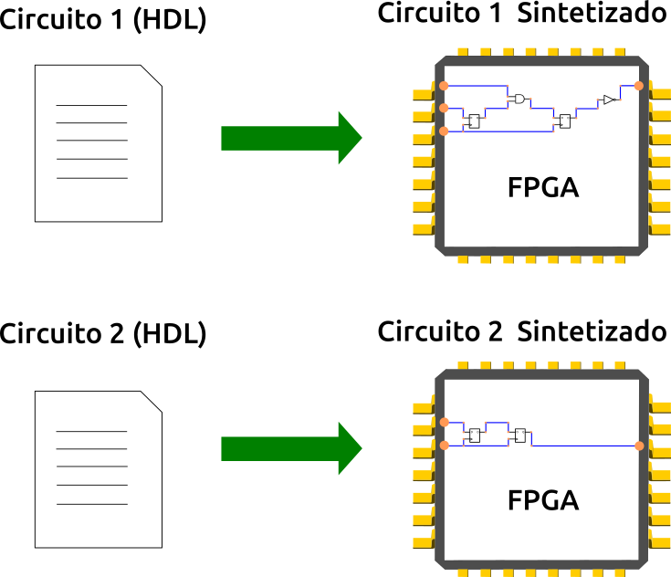Esto es un salto importantísimo. ¡Podemos diseñar hardware real escribiendo "líneas de código"! ¡Podemos usar las mismas herramientas software para diseñar hardware!: repositorios, editores, bibliotecas de hardware...
¡En las FPGAs, el hardware es ahora "software"! ¡Hemos convertido el hardware en software!
Las FPGAs se inventaron hace más de 30 años, por la empresas Xilinx. Sin embargo, es una tecnología que NO se ha popularizado entre los makers y la comunidad de hardware libre en general.
Se trata de una tecnología muy cerrada, rodeada de software privativo, en la que sólo puedes usar lo que el fabricante te diga en las condiciones que te diga. No hay lugar para la innovación. No hay lugar para la comunidad. No están publicados los detalles internos de la FPGA, ni del formato de los bitstreams
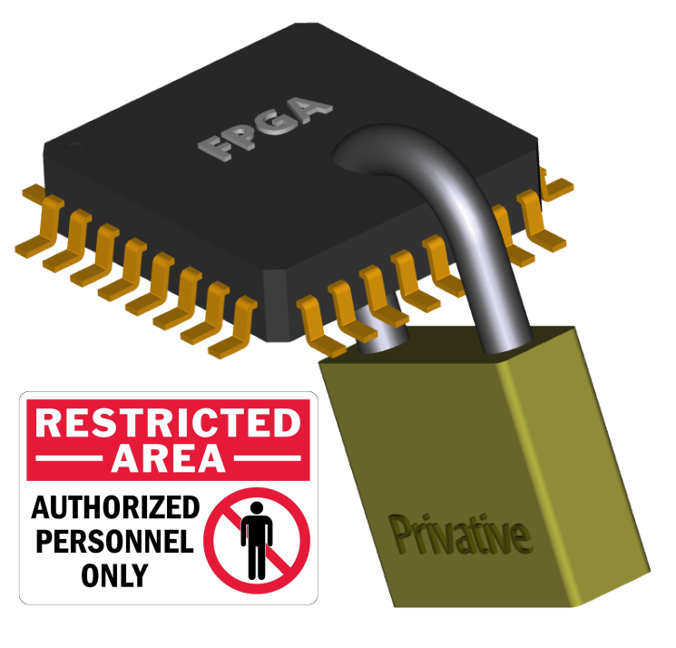Las FPGAs son una tecnología muy cerrada, donde hay muy pocos fabricantes y todo el software es privativo. Nadie conoce el formato de los bitstreams
Sin embargo, Clifford Wolf, hizo Ingeniería inversa de las FPGAs iCE40 de Lattice y en Marzo del 2015 creó el PROYECTO ICESTORM y se liberó la primera toolchain de herramientas que permiten pasar de Verilog al bitstream usando sólo Herramientas libres
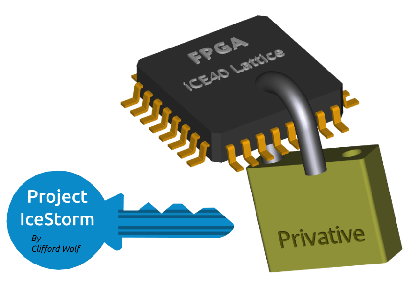